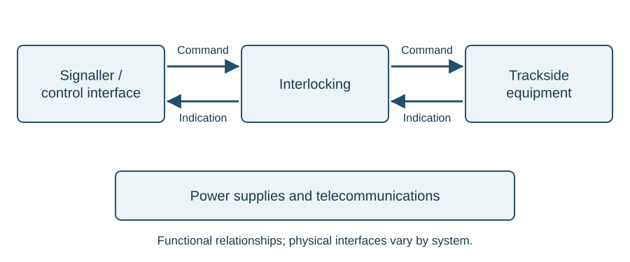

4 Overview of a signalling scheme
Identify the main parts of a signalling system; follow a movement through command, action and indication; explain the roles of power, communications and equipment housings; and distinguish right-side from wrong-side failures.
4.1 The system as a whole
A railway moves vehicles along a guided path. A train cannot steer round an obstruction and may need a substantial distance to stop. Signalling organises movements so that the required route and separation are established before the train proceeds.
Track provides the path, points select it, train detection reports occupation, and the interlocking determines when a movement may be authorised. Signals communicate the permitted movement to the driver. Power supplies and telecommunications support those functions.
A useful first drawing separates the control device, interlocking and railway equipment. Commands travel towards the equipment; indications return information about its state.

The arrows are functional relationships, not a statement that every installation uses a separate cable for each arrow. Relay interlockings and SSI implement the relationships differently.
4.2 Command, action and indication
Follow the command, action and indication separately. The command tells the equipment what to do; the action is what the equipment does; the indication reports its state. A command can be registered without the equipment completing its movement, so an indication must be understood through the equipment and circuit arrangement.
The signaller uses a control panel or workstation to enter commands and view indications. A track layout and equipment indications may share the same screen, but their physical combination does not make their engineering functions identical.
The interlocking checks the designed conditions and controls the railway equipment accordingly. It receives information such as point detection, train-detection states and signal proving. The signaller’s command passes through this logic before it can result in a permitted movement.
4.3 Follow a movement through the system
Imagine a train waiting at a signal before a junction. The signaller wants it to take the branch. Several distinct events must occur:
- The signaller enters a route command.
- The interlocking checks the conditions associated with that route.
- Points are called to the required positions where movement is permitted.
- Detection reports the positions and locking conditions required by the design.
- The interlocking establishes that the necessary conditions are proved and that conflicting movements are excluded.
- The signal can display the permitted aspect.
- Train detection reports the train’s progress, supporting the designed release of the route.
This sequence is simplified. Each stage depends on the actual equipment and controls: registering the command, supplying the operating energy, completing the action and obtaining the relevant indications are separate events.
4.4 Fail-safe behaviour
A right-side failure produces a more restrictive result than the traffic conditions require. For example, loss of a track-clear proving circuit may prevent a signal clearing even though the track is physically empty. A wrong-side failure produces a less restrictive result than the conditions justify, such as an occupied section being indicated clear to the safety logic.
Fail-safe design aims to prevent specified faults from producing unsafe permissions. It does not mean that equipment cannot fail, nor that every possible failure automatically lights a red lamp. A failed power supply can leave a signal dark. The safety arrangement must address the loss of the required information or indication as part of the design and operating system.
The central question is whether the failure can allow a movement that should be prevented. “A fault has occurred” does not by itself tell you whether its effect is right-side or wrong-side.
4.5 Power is a separate engineering path
The logic deciding that points may move does not supply the mechanical energy needed to move them. Similarly, a command for a signal aspect does not itself supply the lamp’s energy. Power supplies, distribution cables, transformers, rectifiers and local protection support the control system.
A signalling-centre power cubicle provides supplies at the required voltages, trackside distribution and standby arrangements. One arrangement uses 650 V distribution to trackside equipment, with local conversion to the required working supplies. Individual circuits in a location case operate at their specified voltages.
A common supply can affect several apparently unrelated items. When several indications disappear together, their shared power or communications path is a relevant system relationship to examine in the drawings.
4.6 Cable routes and equipment housings
Cables follow a planned route, often in troughing. Undertrack crossings carry routes between sides of the railway. The route protects and organises cables; it also brings the signalling system into contact with civil-engineering work, drainage and the track environment.
A location case, often called a loc, houses interfaces close to the equipment. It can contain terminals, relays, track-circuit apparatus, local supplies and other equipment appropriate to the installation. Short connections from a housing to the signal, point equipment or rails are commonly called tail cables.
An equipment room provides more space where a group of cases would be unsuitable. The important relationship is the same: equipment housings provide the interface between the wider scheme and local railway assets.
4.7 Automatic route setting and telecommunications
Automatic route setting can add a further layer of commands using timetable and train information. The commands remain subject to interlocking conditions.
Telecommunications provides both human communications and data paths. Signal post telephones, point-area telephones and radio are examples. A transmission network can also carry remote control and other operational information. The service being carried and the physical bearer carrying it should be considered separately.
4.8 Other interfaces
Level crossings and the Automatic Warning System (AWS) connect signalling with other parts of the railway. Each has a different purpose:
| Interface | Main purpose |
|---|---|
| Level crossing equipment | Manage the interface between road and rail movements |
| AWS | Provide an in-cab warning or clear indication associated with an approach |
These interfaces are introduced here to explain their place in the signalling system. Equipment-specific chapters can develop their operation in more detail.
4.9 Worked example: one symptom, several paths
A display shows that a branch route command has been registered and the points have been commanded reverse, but the entry signal remains at danger. Someone concludes that the signal must have failed because the command went through.
Registration of the command does not establish that the points moved, the required detection was obtained or every signal control condition was satisfied. Follow the system relationships:
- Command: was the intended route or point command registered?
- Energy: was the required supply available to the equipment?
- Action and indication: did the equipment move and lock, and was the required detection indication obtained?
- Signal controls: were all other conditions for clearing the signal satisfied?
A signal remaining at danger may be the correct response to a missing indication elsewhere. This example organises the evidence; it does not prescribe an order for intrusive tests or identify a failed component from the final symptom alone.
4.10 Key points
- Command, action and indication are distinct parts of the equipment sequence.
- A registered command does not establish that every subsequent stage has completed.
- The interlocking separates the movement command from the permission to act.
- Power, communications and physical railway equipment are all part of the scheme.
- Failure classification depends on the safety consequence.
- An interface drawing is a useful starting point for understanding a whole installation.